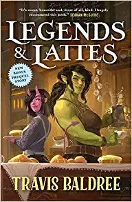
1.
Legends & Lattes
by Travis Baldree
An orc retires from adventuring to open a coffee shop. The book that made cozy fantasy a genre.
Low stakes, found family, tea shops and magic that feels like home. These cozy fantasy books are made for rainy days and reading slumps.

An orc retires from adventuring to open a coffee shop. The book that made cozy fantasy a genre.
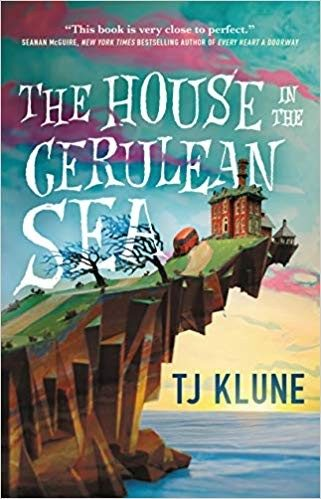
A caseworker visits an orphanage of magical children. Warm, funny and kind.
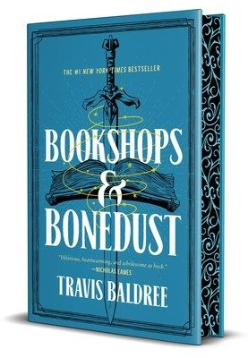
A young Viv, injured and stuck in a sleepy seaside town, ends up helping a struggling bookshop. The prequel to Legends & Lattes.
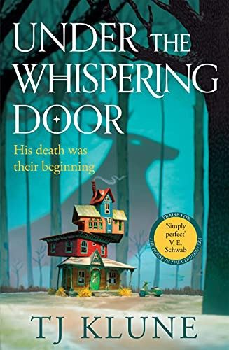
A man who just died is taken to a tea shop between worlds, where the ferryman gives him one week before he crosses over.
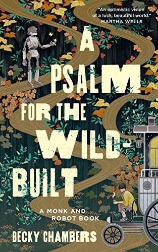
A traveling tea monk meets a robot with one question: what do people need? Short, gentle and hopeful.
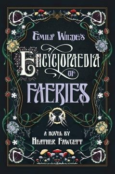
A prickly professor studies faeries in a remote northern village, and her charming rival shows up uninvited.
Audible usually gives new members a free trial: pick an audiobook with your credit and keep it, even if you cancel before the trial ends. Kindle Unlimited also has a free trial with thousands of romantasy and romance titles included.
Try Audible free (paid link) Try Kindle Unlimited (paid link)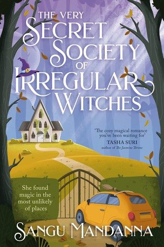
A lonely witch is hired to teach three young witches in a mysterious house. Found family with a sweet romance.
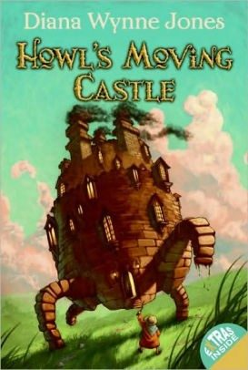
Cursed into an old woman, Sophie takes refuge in a wizard's walking castle. Funny, magical and timeless.
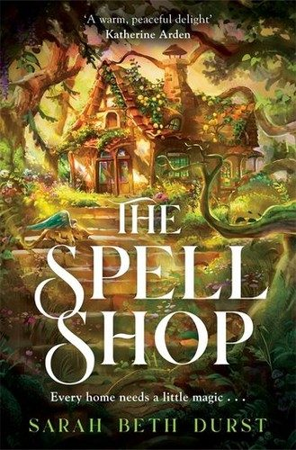
A librarian escapes to a quiet island with forbidden spellbooks and opens a jam shop with a talking spider plant.
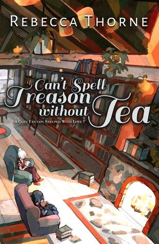
A queen's bodyguard and a mage run away together to open a tea and book shop. Sweet sapphic cozy fantasy.
Audible usually gives new members a free trial: pick an audiobook with your credit and keep it, even if you cancel before the trial ends. Kindle Unlimited also has a free trial with thousands of romantasy and romance titles included.
Try Audible free (paid link) Try Kindle Unlimited (paid link)Launch sale: 25% off everything until Nov 2
12 ink drawings of reading nooks, bookshops, sleepy dragons and rainy days for your Kindle or Kobo lock screen. Made for e-ink; instant download.
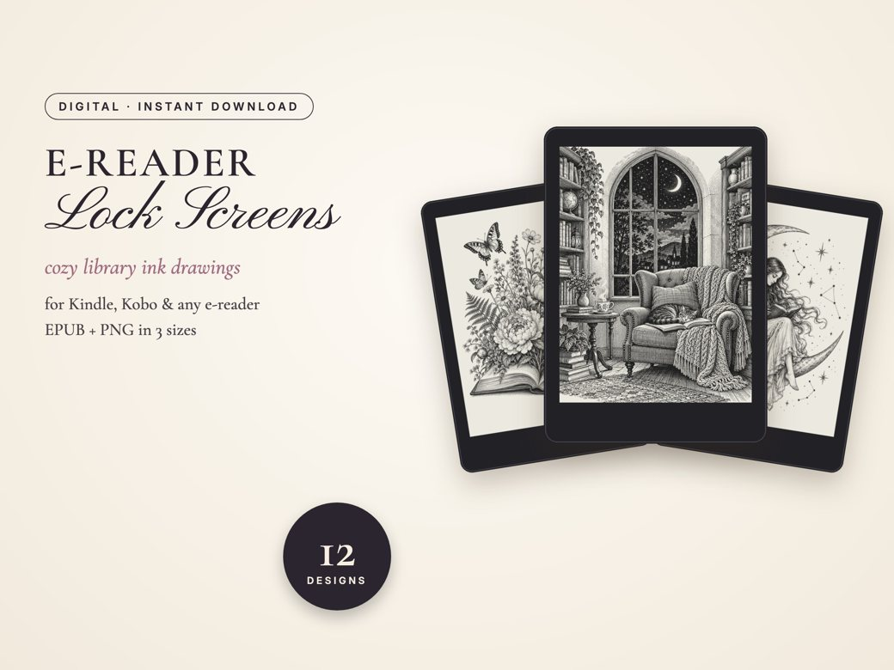
See all 12 designs on Etsy